01
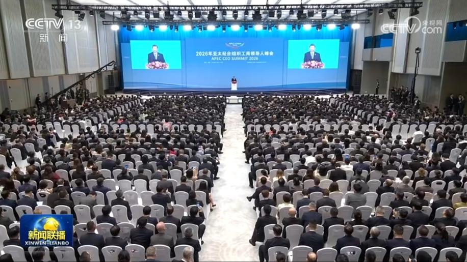
习近平出席亚太经合组织工商领导人峰会开幕式并发表主旨演讲
11月18日上午，国家主席习近平在深圳前海国际会议中心出席2026年亚太经合组织工商领导人峰会开幕式，并发表题为《坚定信心，勇毅前行 共创亚太光明未来》的主旨演讲。


11月18日上午，国家主席习近平在深圳前海国际会议中心出席2026年亚太经合组织工商领导人峰会开幕式，并发表题为《坚定信心，勇毅前行 共创亚太光明未来》的主旨演讲。
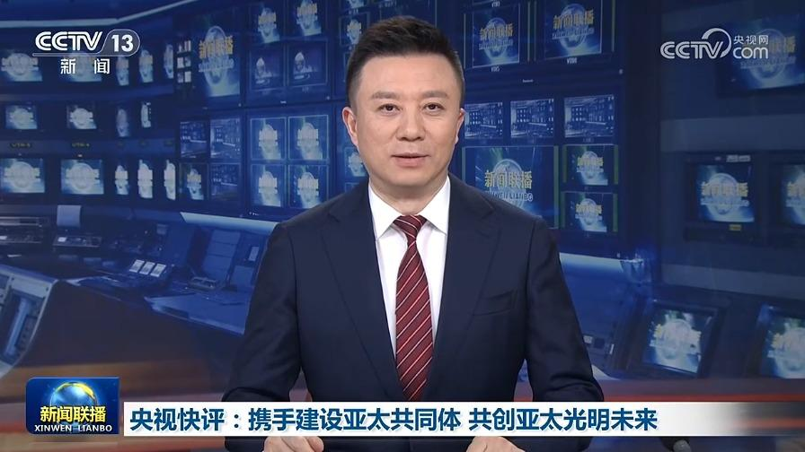
本台今天（11月18日）播发央视快评《携手建设亚太共同体 共创亚太光明未来》。
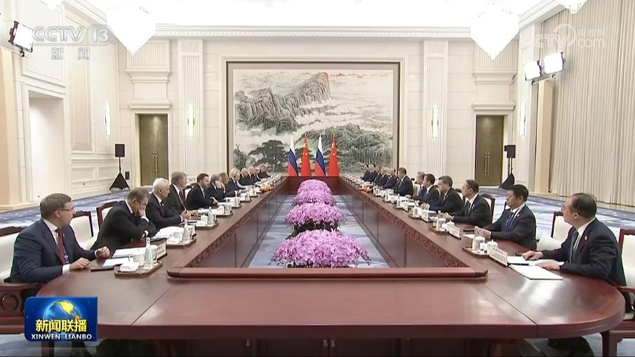
11月18日，国家主席习近平在深圳会见来华出席亚太经合组织领导人非正式会议的俄罗斯总统普京。
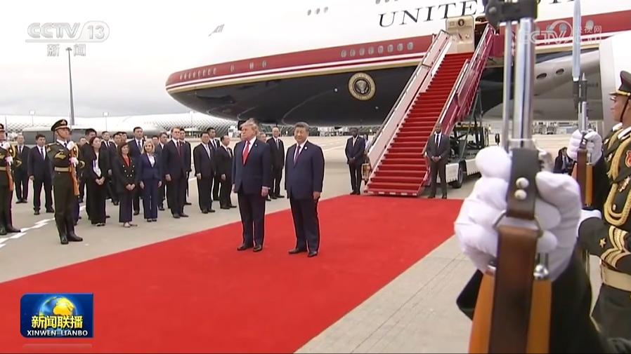
11月18日下午，国家主席习近平在深圳宝安国际机场迎接来华出席亚太经合组织领导人非正式会议的美国总统特朗普。
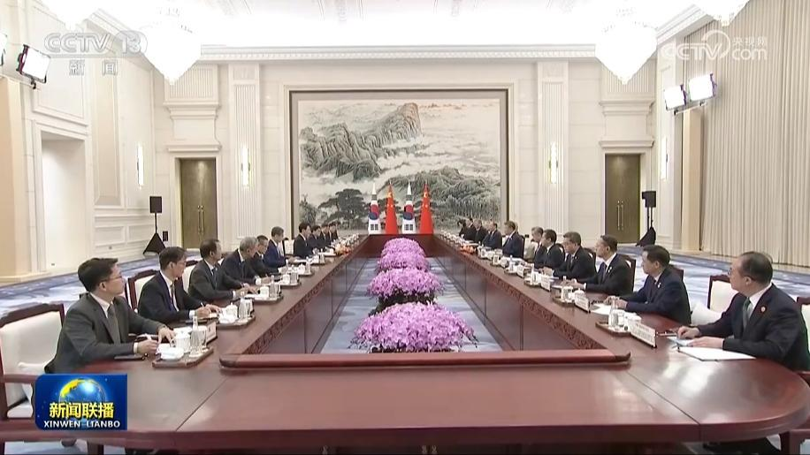
11月18日上午，国家主席习近平在深圳会见来华出席亚太经合组织领导人非正式会议的韩国总统李在明。
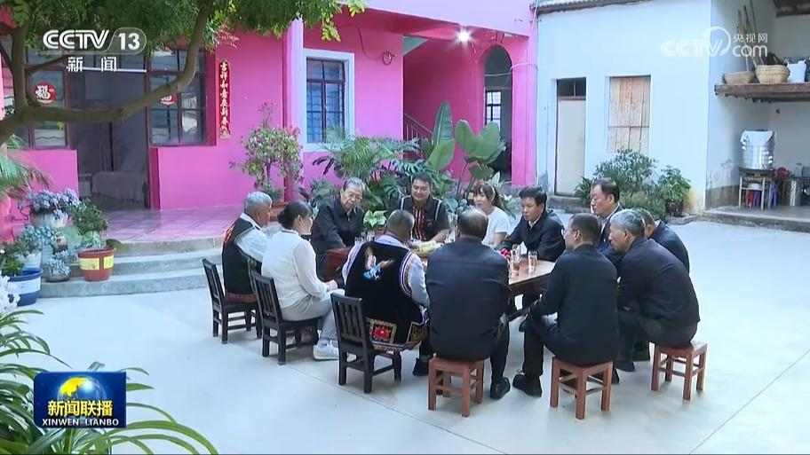
中共中央政治局常委、全国人大常委会委员长赵乐际16日至18日在云南调研。他强调，要坚持用习近平新时代中国特色社会主义思想凝心铸魂，深入学习贯彻党的二十届五中全会精神，以更高标准、更实举措深入推进人大党的建设，以高质量党建引领人大工作高质量发展。
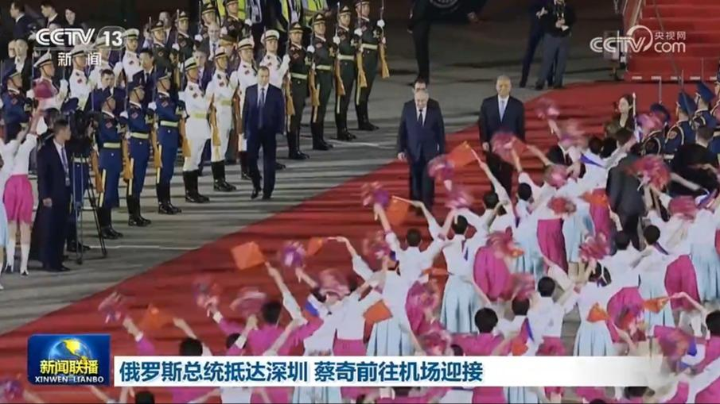
俄罗斯总统普京11月18日凌晨乘专机抵达深圳，出席亚太经合组织第三十三次领导人非正式会议。中共中央政治局常委、中央书记处书记蔡奇前往机场迎接。
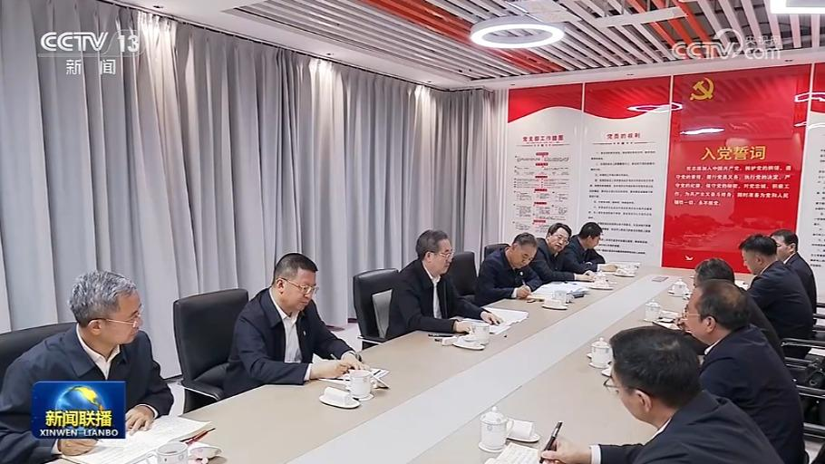
11月16日至18日，中共中央政治局常委、国务院副总理丁薛祥在江西赣州、南昌调研。他强调，要深入学习贯彻党的二十届五中全会精神，认真贯彻落实习近平总书记重要讲话精神，聚焦“走在前、勇争先、善作为”目标要求，推动江西经济社会高质量发展不断取得新成效。
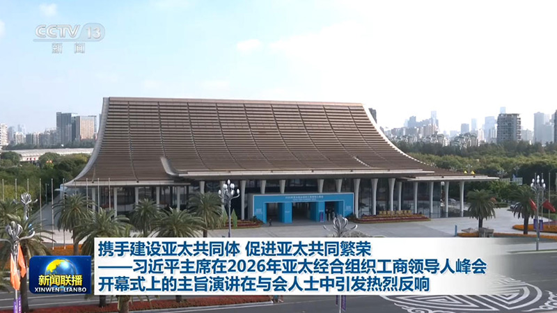
习近平主席今天（11月18日）在2026年亚太经合组织工商领导人峰会开幕式上发表的主旨演讲，在与会人士中引发热烈反响。
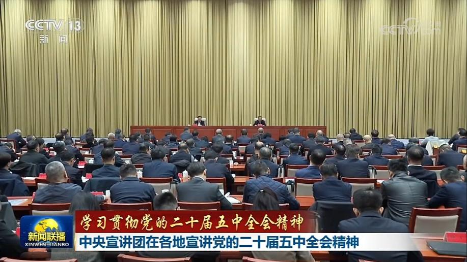
连日来，学习贯彻党的二十届五中全会精神中央宣讲团成员在山西、湖北、内蒙古宣讲，并与基层党员干部群众互动交流，推动全会精神学习走深走实。
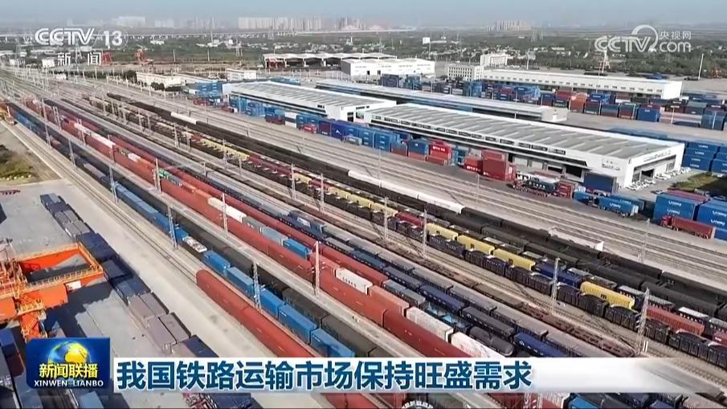
今年以来，我国铁路客运市场需求持续走高。前10个月，全国铁路累计发送旅客41.3亿人次，同比增长4.7%，旅客发送总量、单日旅客发送量、单日客运能力投放等多项指标均创历史新高。
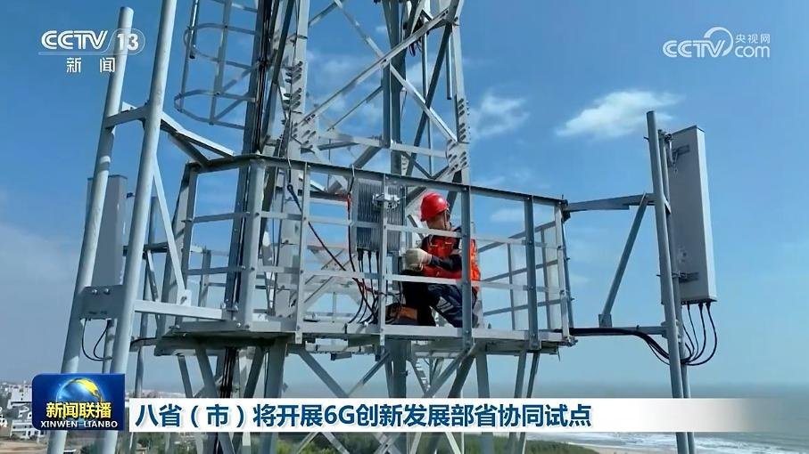
记者从工业和信息化部了解到，日前，国家确定北京市、河北省、上海市、江苏省等八个省（市）开展6G创新发展部省协同试点工作，进一步凝聚优势资源、协同创新，推动形成全国6G创新“一盘棋”格局。
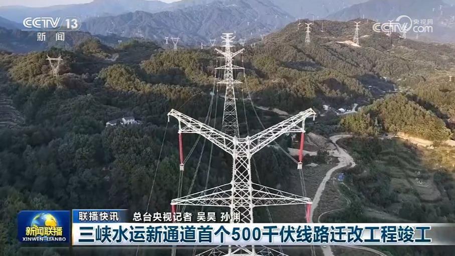
前10个月深圳对APEC其他成员经济体进出口增长超四成